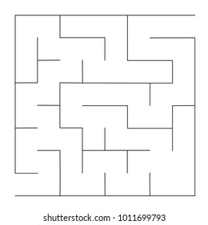

My Projects

Pokemon Wiki
In this project, a comprehensive wikipedia of popular show Pokemon was made through calling of APIs. Various features like searching of Pokemons were also enabled.

Instagram Clone
A comprehensive clone of Instagram, popular social media website, enabling all the futures from uploading to signing up were made available.

Maze Solver
An image of a 10x10 maze is fed by the user. Through openCV, the maze is read and encoded. The encoded maze is solved through Djikstra's algorithm and the starting and end points are returned marked as dots in the image.